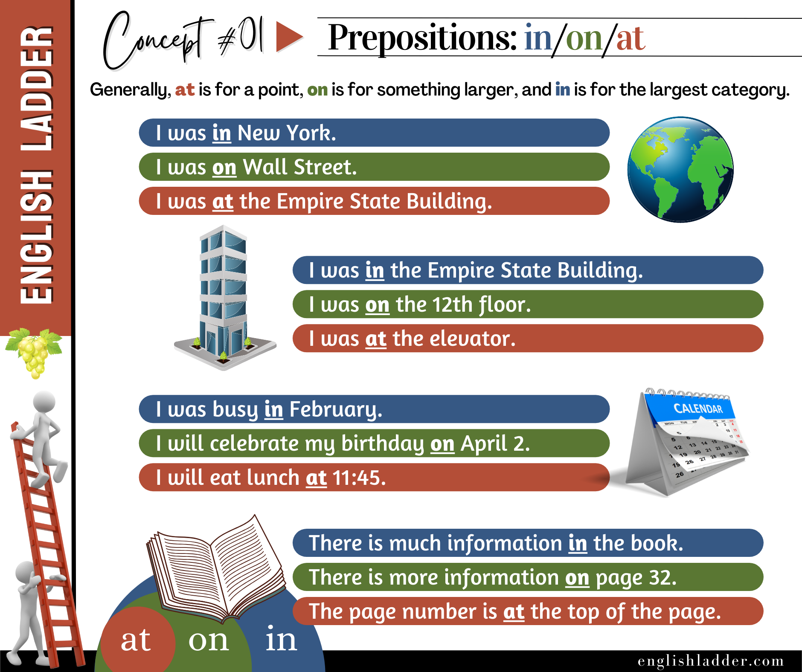

Prompt 01
I was ___ New York.
Reveal answer
in
Grammar Concepts #01
This rebuilt lesson keeps the original concept image, tightens the structure, and turns the explanation into a clearer self-study guide.

Prepositions are words used to show the relationship of a noun or pronoun to other words in a sentence. They often indicate location, time, or direction. This guide will explain the use of the prepositions in, on, and at, which are commonly used to express these relationships.
Understanding the use of in, on, and at can greatly improve your ability to express locations, times, and other relationships in English. Practice using these prepositions in sentences, and soon it will become natural.
Answer the quiz questions below with responses consistent with the grammar concepts taught on the left.
I was ___ New York.
in
She lives ___ Japan.
in
The store is ___ Main Street.
on
The book is ___ the table.
on
I was ___ the Empire State Building.
at
She works ___ the second floor.
on
We will meet ___ the entrance.
at
He is ___ the library.
in
I will celebrate my birthday ___ April 2.
on
We have a meeting ___ Monday.
on
I will eat lunch ___ 11:45.
at
She was born ___ 1990.
in
The flowers bloom ___ spring.
in
He arrived ___ Christmas Day.
on
The train arrives ___ 3:30 PM.
at
We opened presents ___ midnight.
at
There is much information ___ the book.
in
I saw it ___ the website.
on
The page number is ___ the top of the page.
at
Look ___ the beginning of the chapter.
at
He left his keys ___ the counter.
on
She wrote her name ___ the board.
on
I live ___ a big house.
in
She is waiting ___ the bus stop.
at